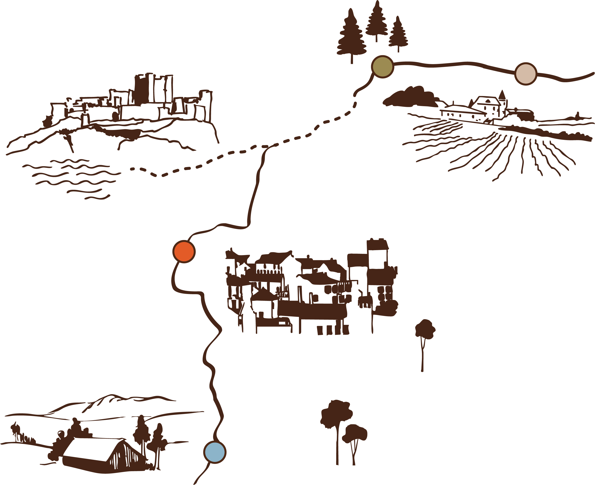

Notre approche pour révéler le potentiel des territoires
Osmo est un collectif d’intervention territoriale, spécialisé en design et cartographie sensible, pour aider à mieux comprendre les lieux, les transformer et activer leur potentiel. Nous observons le territoire de manière globale : ses usages, ses ressources, ses dynamiques. Ce diagnostic clair et partagé permet de voir ce qui fait sa véritable richesse et d’identifier où agir. À partir de cette base commune, nous imaginons et menons des actions concrètes sur le terrain.
Notre objectif est de transformer durablement la manière dont les publics perçoivent et vivent leur territoire, renforcer l’appropriation des lieux et faire naître un lien pérenne avec eux.
La cartographie sensible
Traduire l'invisible : de l'émotion à la donnée
La cartographie sensible illustre notre manière d'habiter et de percevoir un espace, allant d’un quartier à un site patrimonial ou un milieu naturel. Ce processus collaboratif transforme l'impalpable (émotions, souvenirs, perceptions) en informations concrètes. En croisant enquête de terrain, témoignages et démarches créatives, il révèle l'identité profonde d'un lieu : ses ambiances, ses rituels et les attachements qu'il suscite. L’enjeu est de convertir ce vécu en une base de connaissance vivante et exploitable.
Cultiver l'attachement pour un engagement partagé
En plaçant l’imaginaire au cœur du diagnostic, cette approche devient un véritable outil de transmission et de citoyenneté. Elle instaure un dialogue entre un projet (culturel, écologique ou urbain) et le vécu de ceux qui le pratiquent. Qu’il s’agisse d’explorer la biodiversité, de valoriser la mémoire du patrimoine ou de repenser un aménagement, cette méthode saisit le lien entre l’individu et son milieu, pour créer des lieux qui résonnent avec les aspirations de tous.